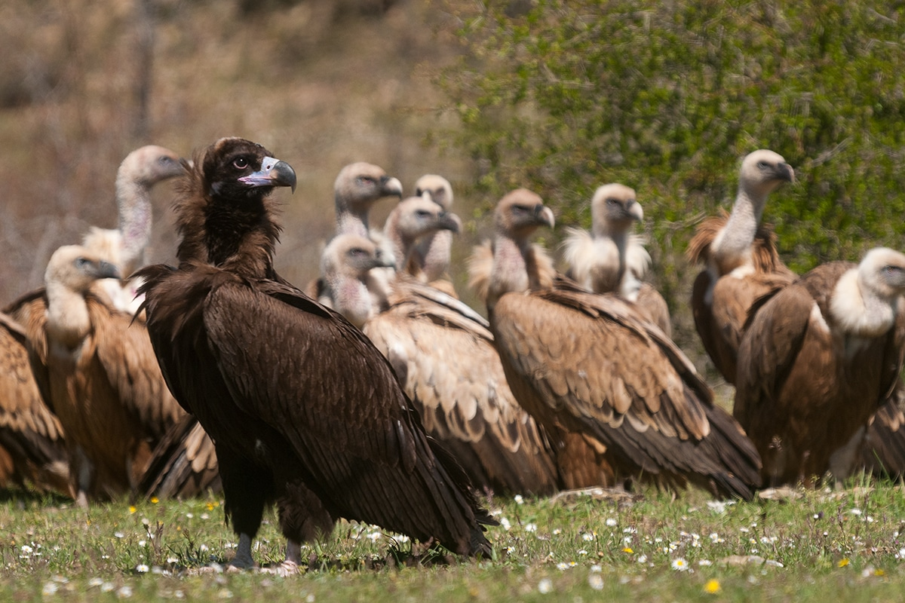

Fauna en Monfragüe
El Parque Nacional y la Reserva de la Biosfera de Monfragüe son el principal refugio de la fauna
europea
mediterránea y la riqueza de su biodiversidad se debe en gran medida a la variedad de sus
ecosistemas y
a la combinación de laderas de umbría de bosque mediterráneo con densa vegetación, roquedos,
extensas
zonas abiertas de dehesa y abundante agua del Tajo y su afluente el Tiétar, que facilitan a la fauna
una
alta disponibilidad de lugares de refugio y nidificación, así como de alimento.

Monfragüe está declarada como Zona de Especial de Protección para las Aves desde 1991 destacando tanto por la gran diversidad de especies que habitan en este espacio singular, como por ser el grupo de las aves el más numeroso.
Monfragüe posee una de las mayores colonias reproductoras de Buitre negro con 250 parejas, la mayor concentración mundial de Águila imperial ibérica con 12 parejas y una de las mayores concentraciones de Cigüeña negra con 30 parejas, estas dos últimas especies catalogadas como especies en Peligro de Extinción.
Además de las aves, en Monfragüe podemos encontrar una gran variedad de mamíferos entre los que destaca la población de ungulados como el ciervo que es el mayor de los herbívoros por tamaño, población e importancia económica. Nutrias, ginetas, tejones, zorros, etc. completan la lista de pequeños mamíferos que podemos encontrar en este espacio singular.
Dentro del grupo de los reptiles son abundantes la Salamanquesa rosada, Lagarto ocelado, Lagartija colilarga, Eslizón ibérico, Culebra de herradura, Culebra bastarda, Culebra de collar, Víbora Hocicuda, Galápago leproso y Galápago europeo.
Los arroyos y la multitud de pequeñas charcas del Parque son un lugar ideal para la vida de los anfibios. Su presencia es de gran importancia, ya que son grandes comedores de insectos y alimento de reptiles, aves e incluso mamíferos. Los anfibios están representados entre otros por la Salamandra común, Gallipato, Tritón ibérico, Sapo corredor, Sapo de espuelas, Sapillo pintojo, Sapo partero ibérico, Rana patilarga, Ranita de San Antón y Ranita ibérica. 
La fauna piscícola de los embalses es rica en endemismos como el Barbo comiza, Boga, Cachuelo, Colmilleja, junto a otras especies como la Anguila, la Carpa, el Pez gato, Pez sol, el Lucio, etc. Los invertebrados son el grupo de animales más desconocido, siendo su presencia imprescindible para la vegetación, y el alimento de un gran número de especies animales. Entre las especies más conocidas encontramos en Monfragüe el Escorpión Amarillo, Grillo común, Tarántula, Mariposa Apolo, Gran Capricornio de las encinas, Mantis religiosa, Escolopendra, etc.